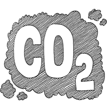

Count your
Carbon Footprints
Delhi’s annual CO2 emission of 69.4 million tonnes is equal to the CO2 emission of Bengaluru, Hyderabad and Chennai put together
If you are a resident of Hong Kong, or for that matter, Abu Dhabi or Doha, you have to admit that you have a much larger carbon footprint than most other cities. Our friends in the US are not leaving behind a small carbon footprint either. Each of them is emitting at least 20 tonnes of CO2 every year, which is equal to the per capita carbon footprint of about 14 individuals in Mumbai—India’s largest city.
US cities such as New Orleans and Detroit have a per capita carbon footprint of more than 25 tonnes per year. At least five cities in China have such a large carbon footprint. Globally, carbon footprints are highly concentrated in a small number of dense and high-income cities.
On the contrary, middle-income cities such as Dhaka, Karachi, Mumbai, Kolkata and Chennai have one of the lowest per capita carbon footprints ranging from 0.7 tonnes to 2.3 tonnes per year. Even cities in Ecuador, Colombia, Indonesia and Dominican Republic have a per capita emission of less than 3 tonnes per year.
Did you know? The top 100 cities across the world drive roughly 20 per cent of global carbon footprint
Delhi is the India's emission capital
Not surprisingly, the national capital region of Delhi has the highest annual carbon footprint in the country. In fact, Delhi’s annual CO2 emission of 69.4 million tonnes is equal to the CO2 emission of Bengaluru, Hyderabad and Chennai put together. When it comes to per capita CO emission, Chandigarh and Vadodara are far ahead of the rest with 3.9 tonnes and 3.5 tonnes respectively.
According to a study titled ‘CO2 Emissions from Fuel Combustion (Highlights) 2017’, which was released in November 2017, CO2 levels in India from fuel combustion increased from 181 million tonnes (MT) in 1971 to 2,066 MT in 2015—a 1,041 per cent increase.
Did you know? Lagos in Nigeria has the lowest per capita carbon footprint in the world
Inviting extreme heat stress and climate change
The higher the CO2 emission, the greater is the chance of global warming. According to a recent research report, urban residents will face potentially devastating heat waves, flooding and droughts by 2050 if global warming continues on its current trajectory.
A record 360 million people will be exposed to extreme heat in 142 Indian cities by 2050 if global warming continues. As the climate change is already underway, we need “radical decarbonisation measures” like limiting vehicles that run on fossil fuel and gradually switching to 100 per cent renewable electricity that can significantly contribute towards reduction in carbon footprint.
Did you know? Seoul has the highest carbon footprint among the top 500 CO2-emitting cities in the world
Note:
PM10 : Particulate matter size less than or equal to 10 μm
SO2 : Sulphur dioxide
NO2 : Nitrogen Dioxide
Data source:
✸ Central Pollution Control Board
✸ EnviStats India, 2018
✸ World Health Organisation (WHO), 2018